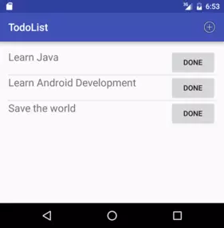
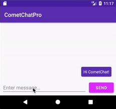

Simple ToDo App UI - keep track of your tasks

Messaging App

Ktor - Kotlin's asynchronous web framework
Want to level up your Kotlin skills? Here are some cool project ideas and real GitHub repos you can explore and learn from.